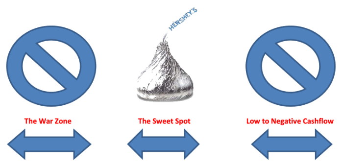

BEFORE DUMPING YOUR
SAVINGS INTO REAL ESTATE
SAVINGS INTO REAL ESTATE
Have You Thought About Due Diligence?
When researching turnkey sellers, you'll find that many of them don't actually own the properties
they're selling. They are simply marketing properties for others, acting as middlemen between you and
the true owners. There's not anything necessarily wrong with this concept, but it's your job to try and
find the direct source. Doing so cuts out all the fat and gives you the best possible return on your
investment.
Finding the true owner can be tricky however, because middlemen are pros at disguising themselves as the actual owners of the properties they're selling. Not only that, they'll often insinuate they're principles of the management company that will be managing your property. Be careful you're not being referred to a management company that is one of their affiliates. If a seller refers to a person or company as one of their affiliates or partners in regards to the purchase, sale, renovation or management of a property, then you must know that the middleman has limited or no control over that aspect of your investment.
Finding the true owner can be tricky however, because middlemen are pros at disguising themselves as the actual owners of the properties they're selling. Not only that, they'll often insinuate they're principles of the management company that will be managing your property. Be careful you're not being referred to a management company that is one of their affiliates. If a seller refers to a person or company as one of their affiliates or partners in regards to the purchase, sale, renovation or management of a property, then you must know that the middleman has limited or no control over that aspect of your investment.
Typically the longer someone has been in business the better the business will operate. The main thing you want to be sure of is that your turnkey provider is a full-time professional. There is no way to run this type of business and hold down another job.
I know asking someone if they've ever lost a property to foreclosure is a tough question to ask, but
it's very important not to take advice or do business with someone who does not have a fundamental
understanding of how to make this business work. Do your homework. Ask sellers the tough questions, and
then do your own research to verify their answers. This is your hard earned money we're talking about.
Protect it. Many investors bought properties before 2007 when rental properties could be bought and
financed at 100% loan to value. Most of those investors are now bankrupt. Their down fall was over
leveraging. They didn't simply buy their properties and put loans on them for the amount of their
investment. They made a poor business decision and participated in what has rightly become the dirty
word in banking nowadays. They did "cash-out refinances". A cash-out refinance is a type of loan in
which the owner refinances a property they'd previously purchased. Upon closing on the refinance, they
pulled "cash out" ultimately removing the equity from the property. This was bad for several reasons:
Because they pulled cash out on the refinance, they incurred more debt to service, which decreased their cash-flow.
All of the closing costs associated with the second closing were rolled into the amount of the new loan. This added even more debt to service, further diminishing cash-flow. The owner now has an over-leveraged property that according to federal guidelines must now pay mortgage insurance as part of the monthly payment. This again further decreases cash-flow. Cash out refinance loans received higher interest rates because they were riskier. Higher interest rates = higher monthly payments = less cash flow.
Investors kidded themselves into thinking the borrowed funds from the cash outs were profit and would float the negative cash-flow from their rentals. Because cash out financing was easy to access, a lot of investors jumped on the bandwagon. They increased their lifestyles by doing as many of these as they could, and lived off the borrowed funds. When the music stopped and the cash out refinancing option was no longer available, a lot of investors found out the hard way that their business models were very flawed. Their properties didn't cash flow in the long term because they couldn't withstand the occasional vacancy and repair associated with investment property. The only way their business model could sustain itself was through continued cash outs with new acquisitions. Needless to say, investors with this business model ultimately met with financial disaster. Most of these investors were never particularly good at renovating or managing property. They simply bought them, removed the equity with a cash-out refi, and handed their properties off to a third party management company. Today, you'll find a lot of these same individuals posing as successful turn key real estate investors. Most of them still don't renovate or manage property. Their forte is now just good marketing. Because they're no longer able to secure financing, they market other people's properties as their own, increasing the purchase price while rarely providing any additional value.
Because they pulled cash out on the refinance, they incurred more debt to service, which decreased their cash-flow.
All of the closing costs associated with the second closing were rolled into the amount of the new loan. This added even more debt to service, further diminishing cash-flow. The owner now has an over-leveraged property that according to federal guidelines must now pay mortgage insurance as part of the monthly payment. This again further decreases cash-flow. Cash out refinance loans received higher interest rates because they were riskier. Higher interest rates = higher monthly payments = less cash flow.
Investors kidded themselves into thinking the borrowed funds from the cash outs were profit and would float the negative cash-flow from their rentals. Because cash out financing was easy to access, a lot of investors jumped on the bandwagon. They increased their lifestyles by doing as many of these as they could, and lived off the borrowed funds. When the music stopped and the cash out refinancing option was no longer available, a lot of investors found out the hard way that their business models were very flawed. Their properties didn't cash flow in the long term because they couldn't withstand the occasional vacancy and repair associated with investment property. The only way their business model could sustain itself was through continued cash outs with new acquisitions. Needless to say, investors with this business model ultimately met with financial disaster. Most of these investors were never particularly good at renovating or managing property. They simply bought them, removed the equity with a cash-out refi, and handed their properties off to a third party management company. Today, you'll find a lot of these same individuals posing as successful turn key real estate investors. Most of them still don't renovate or manage property. Their forte is now just good marketing. Because they're no longer able to secure financing, they market other people's properties as their own, increasing the purchase price while rarely providing any additional value.
You want a turn key seller that walks the walk, not just one that talks the talk. If a turn key seller
believes in the product they're selling, they will own a lot of rental properties themselves. Beware of
the cook that doesn't eat his own cooking.
BUYING DISTRESSED TURNKEY PROPERTY
There are some turnkey sellers that specialize in selling distressed property promising renovation and
management after your purchase. Although there are good deals out there that fit this description, they
call for a lot more due diligence than purchasing property that has no deferred maintenance and is
already cash flowing.
If you purchase a distressed property from a seller that promises a good renovation after you purchase, please get very serious on your due diligence. Unless you are a very seasoned pro, I suggest you spend a few hundred bucks and hire an inspector to give you a detailed report on the condition of the property and an estimate of the cost of renovation. This is how I bought my very first house. Armed with the inspection report and an estimate of the cost to rehab the property, I revisited the seller with a much lower offer. I saved about $10,000 and a lot of heartache.
If you purchase a distressed property from a seller that promises a good renovation after you purchase, please get very serious on your due diligence. Unless you are a very seasoned pro, I suggest you spend a few hundred bucks and hire an inspector to give you a detailed report on the condition of the property and an estimate of the cost of renovation. This is how I bought my very first house. Armed with the inspection report and an estimate of the cost to rehab the property, I revisited the seller with a much lower offer. I saved about $10,000 and a lot of heartache.
I'll admit that this is a loaded question because there's hardly any comparison between the two
options. Without a doubt one of the biggest ways new or out of town investors get in trouble is by
purchasing distressed, vacant property based on the seller's opinions of the following:
- The supposed condition of the property
- The hypothetical cost of renovation
- The proposed market rent
- The estimated length of time between your purchase date and the day the property becomes occupied and cash-flowing
Look for a turn key seller that offers a one year home warranty. If you're buying a property, especially
if you're from out of town, this should not be negotiable. If your seller is not confident enough in
their product to offer a home warranty, you should at the very least insist on a detailed home
inspection from a third party inspector. Home inspections typically cost
$350-$500 and are a must-have if your property does not come with a one year warranty.
We highly recommend Amerispec Home Inspections, a national home warranty company. www.amerispec.com 1-888-634-9861 for more information. In question #12, we address the importance of your seller and property manager being one and the same, keeping all the accountability under one roof. Nothing is worse than finger pointing between the seller and property management company over repair and warranty issues.
We highly recommend Amerispec Home Inspections, a national home warranty company. www.amerispec.com 1-888-634-9861 for more information. In question #12, we address the importance of your seller and property manager being one and the same, keeping all the accountability under one roof. Nothing is worse than finger pointing between the seller and property management company over repair and warranty issues.
What you need to consider when comparing two investment properties with similar cash flows, but
different purchase prices is this:
return is the cost of your initial investment combined with the cost of vacancies over the long
term.
I advise each and every investor I counsel to treat their investment property like a business.
One aspect of this is understanding that at some point in the future, your property will experience
turnover.
In this graph we compare a typical $120,000 investment property with a typical $200,000 investment
property.
You may be surprised by how two properties with identical gross cash-flows have such a large variance in
returns.
difference in square footage and initial down payment drastically affect the return.
Cost of initial Investment

Cost of a 30 Day Vacancy

Annual Return on Investment

The main thing you are trying to discern is whether or not the properties are in what investors call the
"war zone". Different investors have different goals in regards to investment property. Some investors
are more interested in long term appreciation, while others are looking for the highest cash flow
possible. No matter what market you're interested in, all major cities will have neighborhoods you don't
want to invest in, regardless of the price of the property. I've passed on property that was literally
offered to me for free.
If one end of the property spectrum is the war zone, the other end is the million dollar neighborhoods.
Neither of these neighborhoods tend to be desirable from an investment perspective. In the question
above, we addressed how investors can get into trouble on the high end of the spectrum. The war zone is
of course the low end of the spectrum. Somewhere in the middle is what we call the sweet spot.
If one end of the property spectrum is the war zone, the other end is the million dollar neighborhoods. Neither of these neighborhoods tend to be desirable from an investment perspective. In the question above, we addressed how investors can get into trouble on the high end of the spectrum. The war zone is of course the low end of the spectrum. Somewhere in the middle is what we call the sweet spot.
If one end of the property spectrum is the war zone, the other end is the million dollar neighborhoods. Neither of these neighborhoods tend to be desirable from an investment perspective. In the question above, we addressed how investors can get into trouble on the high end of the spectrum. The war zone is of course the low end of the spectrum. Somewhere in the middle is what we call the sweet spot.
The relationship between purchase price and market rental rates varies from city to city, and is one of the largest determining factors for how well your property will perform. It's your job to research and find the sweet spot in the market you want to invest in.
If one end of the property spectrum is the war zone, the other end is the million dollar neighborhoods. Neither of these neighborhoods tend to be desirable from an investment perspective. In the question above, we addressed how investors can get into trouble on the high end of the spectrum. The war zone is of course the low end of the spectrum. Somewhere in the middle is what we call the sweet spot.
If one end of the property spectrum is the war zone, the other end is the million dollar neighborhoods. Neither of these neighborhoods tend to be desirable from an investment perspective. In the question above, we addressed how investors can get into trouble on the high end of the spectrum. The war zone is of course the low end of the spectrum. Somewhere in the middle is what we call the sweet spot.
The relationship between purchase price and market rental rates varies from city to city, and is one of the largest determining factors for how well your property will perform. It's your job to research and find the sweet spot in the market you want to invest in.

The answer needs to be yes. If it's not, keep looking. Besides the purchase price of your property, the
quality of management is the number one factor for how well your investment performs.
A turnkey seller that also manages your property has a strong financial interest in making sure your investment performs long term. Long term performance increases the likelyhood that you will become a repeat buyer and refer your friends and family. In contrast, third party property management companies benefit when your investment suffers, because they profit from maintenance and turnover.
A turnkey seller that also manages your property has a strong financial interest in making sure your investment performs long term. Long term performance increases the likelyhood that you will become a repeat buyer and refer your friends and family. In contrast, third party property management companies benefit when your investment suffers, because they profit from maintenance and turnover. The best performing properties experience positive returns because of the quality of the property, timely maintenance service, and accessibility to management. When dealing with separate sellers and managers, there is often finger pointing from seller to manager and back again in regards to faulty performance. Do yourself a favor and leave the accountability in one spot under the same roof.
Another small but distinct advantage of buying from a seller who owns the management company that will manage your investment, is that the maintenance will most likely be performed by the same crews that performed the renovation. If this is the case, their familiarity with the property will eventually save you money on repairs down the road.
A turnkey seller that also manages your property has a strong financial interest in making sure your investment performs long term. Long term performance increases the likelyhood that you will become a repeat buyer and refer your friends and family. In contrast, third party property management companies benefit when your investment suffers, because they profit from maintenance and turnover.
A turnkey seller that also manages your property has a strong financial interest in making sure your investment performs long term. Long term performance increases the likelyhood that you will become a repeat buyer and refer your friends and family. In contrast, third party property management companies benefit when your investment suffers, because they profit from maintenance and turnover. The best performing properties experience positive returns because of the quality of the property, timely maintenance service, and accessibility to management. When dealing with separate sellers and managers, there is often finger pointing from seller to manager and back again in regards to faulty performance. Do yourself a favor and leave the accountability in one spot under the same roof.
Another small but distinct advantage of buying from a seller who owns the management company that will manage your investment, is that the maintenance will most likely be performed by the same crews that performed the renovation. If this is the case, their familiarity with the property will eventually save you money on repairs down the road.
There is no way to overstate the importance property management plays in how well your investment will
perform. Great deals can be managed into disaster with the wrong property management, and conversely,
marginal deals can be managed to success, given enough time and quality management. You should spend as
much time and effort researching property management as you spend researching the property itself.
Tenants are the lifeblood of any real estate investment business. If they don't pay the rent, the investment doesn't perform. Make sure your property management company treats them like gold.
Tenants are the lifeblood of any real estate investment business. If they don't pay the rent, the investment doesn't perform. Make sure your property management company treats them like gold.
The best answer you can receive is that the property is rented at slightly below market rates. Keeping
rents slightly below market increases the likelihood of a long term tenant. Vacancy, not slightly
reduced rent, is the biggest killer of return on investment for rental property.
For example, if market rent for a property is $725/month, it is wise to market and rent that property for $675-$700 per month. Although $25-$50 per month is not a lot of money to us investors, it is a lot of money to the tenant. This small difference, when combined with a rental that is in top condition, encourages lease renewals and will keep your property occupied and cash flowing for years to come. Utilizing this strategy will increase the return on your investment well above the additional $25-$50 per month you would have received in rent.
When shopping for turn-key real estate, don't compare vacant properties with occupied, cash-flowing investments. They're not apples to apples investments and should be valued accordingly.
For example, if market rent for a property is $725/month, it is wise to market and rent that property for $675-$700 per month. Although $25-$50 per month is not a lot of money to us investors, it is a lot of money to the tenant. This small difference, when combined with a rental that is in top condition, encourages lease renewals and will keep your property occupied and cash flowing for years to come. Utilizing this strategy will increase the return on your investment well above the additional $25-$50 per month you would have received in rent.
When shopping for turn-key real estate, don't compare vacant properties with occupied, cash-flowing investments. They're not apples to apples investments and should be valued accordingly.
If you're considering purchasing a vacant property you should be aware of the many potential
problems associated with this type of purchase. Some of the problems that accompany the purchase of
vacant property are:
A) It's impossible to know how long the property will sit vacant before becoming occupied. Vacancies are
the biggest killer of return on investment in real estate. It's a bummer to start your investment off
with several months of vacancy, putting your ROI in the hole right from the start.
B) One of the biggest "gotchas" of purchasing vacant rental property is finding out market rental rates are significantly less than you were led to believe. Your decision to purchase was based on a cash flow that was unattainable. Regardless of whether or not the property you're about to purchase is vacant, you should check market rents to make sure the proposed rent of the subject property is on par for the area (or preferably slightly below. See question #14). It's absolutely possible to rent a property at above market rates but the potential for lease renewal will be slight, drastically increasing your likelihood of vacancy and simultaneously reducing your return on investment. Typically, the only reason a tenant will pay above market rent is because they are not able to rent elsewhere. Most tenants paying above market rent have worse than average credit, often times with multiple evictions. These are not the types of tenants you want in your home.
C) The potential for vandalism and theft increases exponentially when the property is vacant, regardless of the quality of the neighborhood.
D) Most Landlord insurance policies have a 30 day vacancy clause. Unless you have a specific vacant property insurance policy, your property will be exposed to liability for fire, theft, vandalism, acts of God, etc. If you're going to buy a vacant property, don't close unless you have a vacant insurance policy. Get ready for sticker shock. Vacant insurance policies cost up to four times as much as a regular landlord policy. A true turn key investment will provide cash flow within a very short time of closing and be free of the potential pitfalls associated with vacant property.
B) One of the biggest "gotchas" of purchasing vacant rental property is finding out market rental rates are significantly less than you were led to believe. Your decision to purchase was based on a cash flow that was unattainable. Regardless of whether or not the property you're about to purchase is vacant, you should check market rents to make sure the proposed rent of the subject property is on par for the area (or preferably slightly below. See question #14). It's absolutely possible to rent a property at above market rates but the potential for lease renewal will be slight, drastically increasing your likelihood of vacancy and simultaneously reducing your return on investment. Typically, the only reason a tenant will pay above market rent is because they are not able to rent elsewhere. Most tenants paying above market rent have worse than average credit, often times with multiple evictions. These are not the types of tenants you want in your home.
C) The potential for vandalism and theft increases exponentially when the property is vacant, regardless of the quality of the neighborhood.
D) Most Landlord insurance policies have a 30 day vacancy clause. Unless you have a specific vacant property insurance policy, your property will be exposed to liability for fire, theft, vandalism, acts of God, etc. If you're going to buy a vacant property, don't close unless you have a vacant insurance policy. Get ready for sticker shock. Vacant insurance policies cost up to four times as much as a regular landlord policy. A true turn key investment will provide cash flow within a very short time of closing and be free of the potential pitfalls associated with vacant property.
This is one of the biggest indicators of how well a property management company is performing. A good
turn key seller/manager will be able to tell you how many vacancies they currently have on their books
without flinching, and more importantly their percentage of occupancy. Regardless of the answer, probe
as to how they market, average length of vacancy, what their criteria is for occupancy, etc...
SOAPBOX
A turn-key seller/manager that truly endeavors to provide high quality investments that stand the test
of time will have adopted this philosophy: Performing a top-notch renovation and renting property at
slightly below market rates attracts a higher-quality long-term tenant, ultimately increasing the
return on investment.
If a property has been vacant longer than 45 days, there is a potential problem. You're trying to find
out what the problem is. Is it a two bedroom and the market is for three bedrooms? Is it in an
undesirable part of town? Find out what the problem is and make sure to avoid purchasing similar
properties. Sometimes a property that has a special price also has a special problem.
You can't allow this question to be a deal breaker when you're shopping because unfortunately, the
overwhelming majority of turn key outfits are going to answer "Yes". This is because application fees
are a huge profit center for management companies. However, if you're lucky enough to stumble across a
management company that absorbs the cost of applications, you've found a good one.
A management company that absorbs the costs of screening applicants ensures that the maximum number of individuals will apply to rent your property. Having a larger pool of applicants to choose from allows them to select the absolute best tenant for your property. This type of management team is focused on finding the best quality tenant, (the lifeblood of all real estate investments) not making money on application fees. This is the hallmark of an owner-focused management style.
A management company that absorbs the costs of screening applicants ensures that the maximum number of individuals will apply to rent your property. Having a larger pool of applicants to choose from allows them to select the absolute best tenant for your property. This type of management team is focused on finding the best quality tenant, (the lifeblood of all real estate investments) not making money on application fees. This is the hallmark of an owner-focused management style.
This is a sticky liability issue, and we are in no way real estate attorneys. However, in the opinion of
the author, proper due diligence would include asking to see the lease the management company uses. If
specific breeds aren't permitted, it will be stated in the lease. Do a little research and you'll find
that other investors have had legal trouble over this issue.
This is an especially important question for out of town investors and you should expect nothing less.
HD recording options are now readily available, and any property management company worth its salt
should offer this service to its investors.
If a picture is worth a thousand words, then a video is worth a million. There's nothing like a detailed video explanation to give you confidence and understanding of the work to be performed on your property. As the saying goes, locks keep honest people honest and video doesn't lie. Insist on it.
If a picture is worth a thousand words, then a video is worth a million. There's nothing like a detailed video explanation to give you confidence and understanding of the work to be performed on your property. As the saying goes, locks keep honest people honest and video doesn't lie. Insist on it.